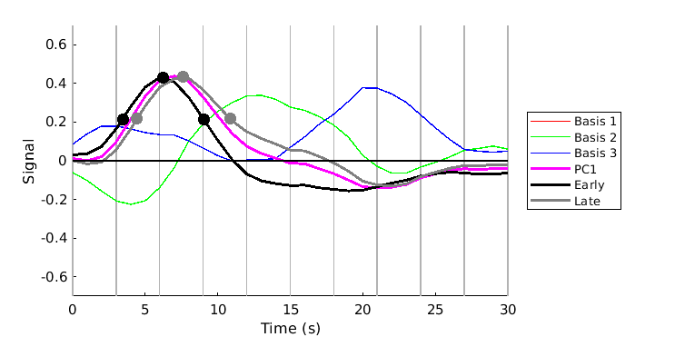
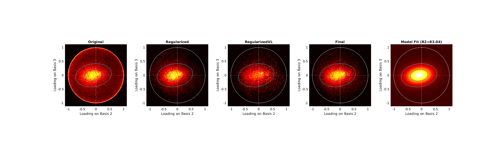

Contents
Example 2: Apply TDM on an example dataset (quick version)
Download dataset (if necessary) and add TDM to the MATLAB path
setup;
Load in the data
load('exampledataset_inputsonly.mat','data','intensity','tr');
Run extracthrfmanifold.m
results = extracthrfmanifold(data,intensity,tr,1);
calculating particles...
Wait while particle positions are being optimized ...
Iteration # Net Energy Time (sec)
0 36641.355445 0.0
50 33918.540866 0.7
100 33917.775987 1.4
150 33917.749149 2.1
193 33917.745363 2.7
Optimization completed after 193 iterations. Elapsed time: 2.7 sec
done.
initial seed is [56 56 22.2 22.2 0.080723 0.072152 0]
Norm of First-order
Iteration Func-count f(x) step optimality
0 8 53.3073 153
1 16 14.2105 10 20.3
2 24 10.9173 16.2739 54.5
3 32 3.19719 13.0282 9.54
4 40 2.68099 7.0568 1.83
5 48 2.6669 0.725015 0.0444
6 56 2.66683 0.0737062 0.00378
7 64 2.66682 0.00662206 0.000625
Local minimum possible.
lsqcurvefit stopped because the final change in the sum of squares relative to
its initial value is less than the selected value of the function tolerance.
 